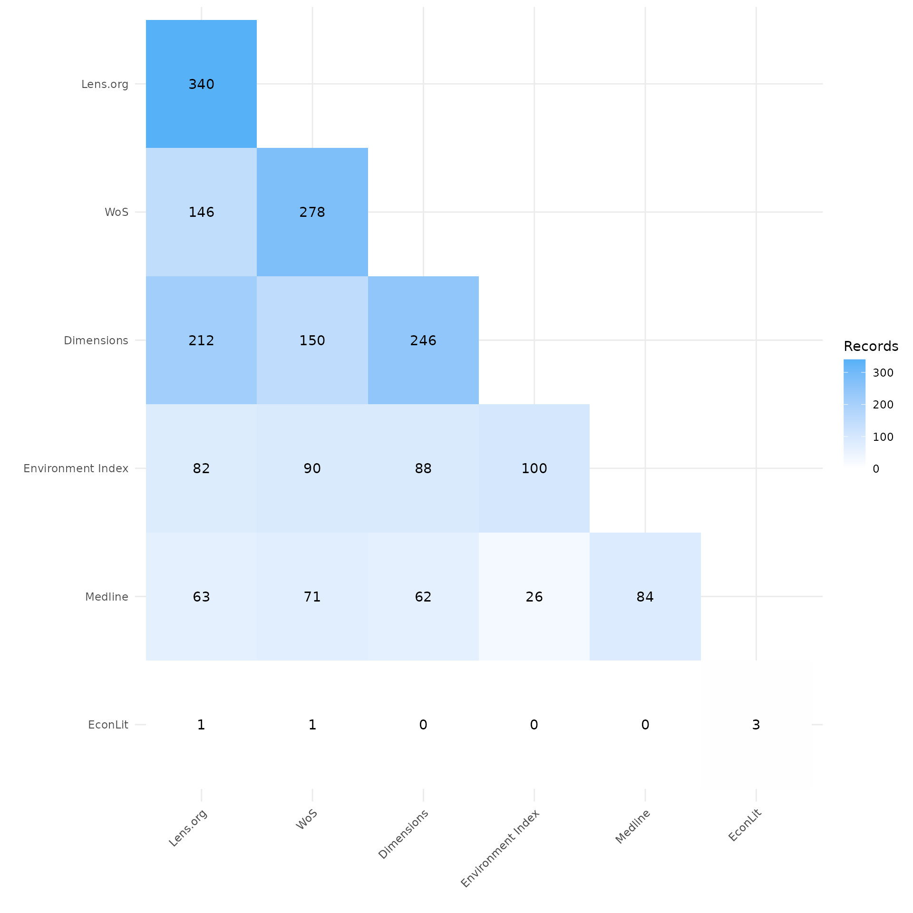
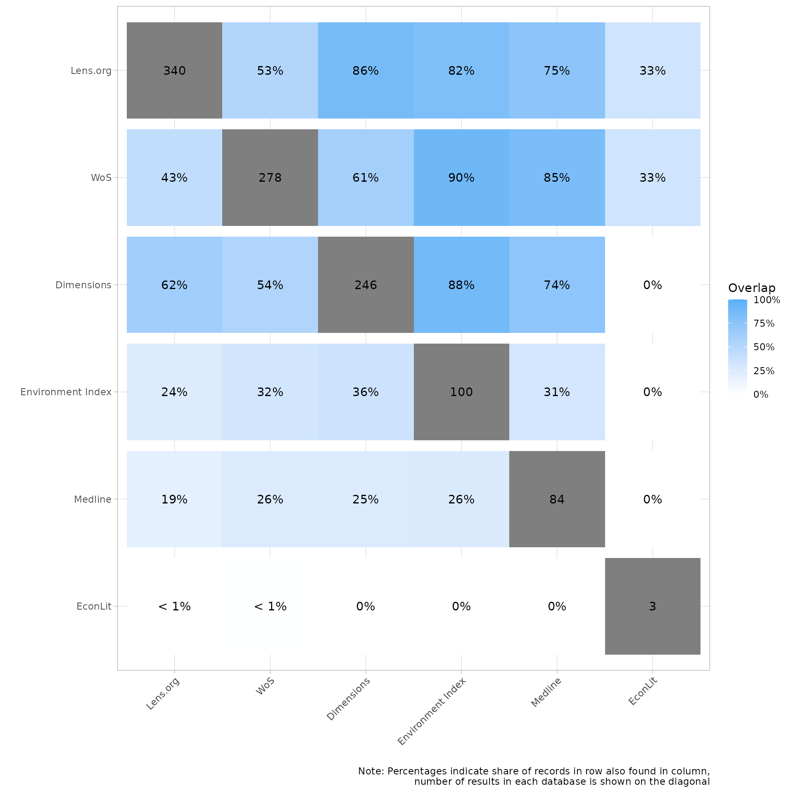
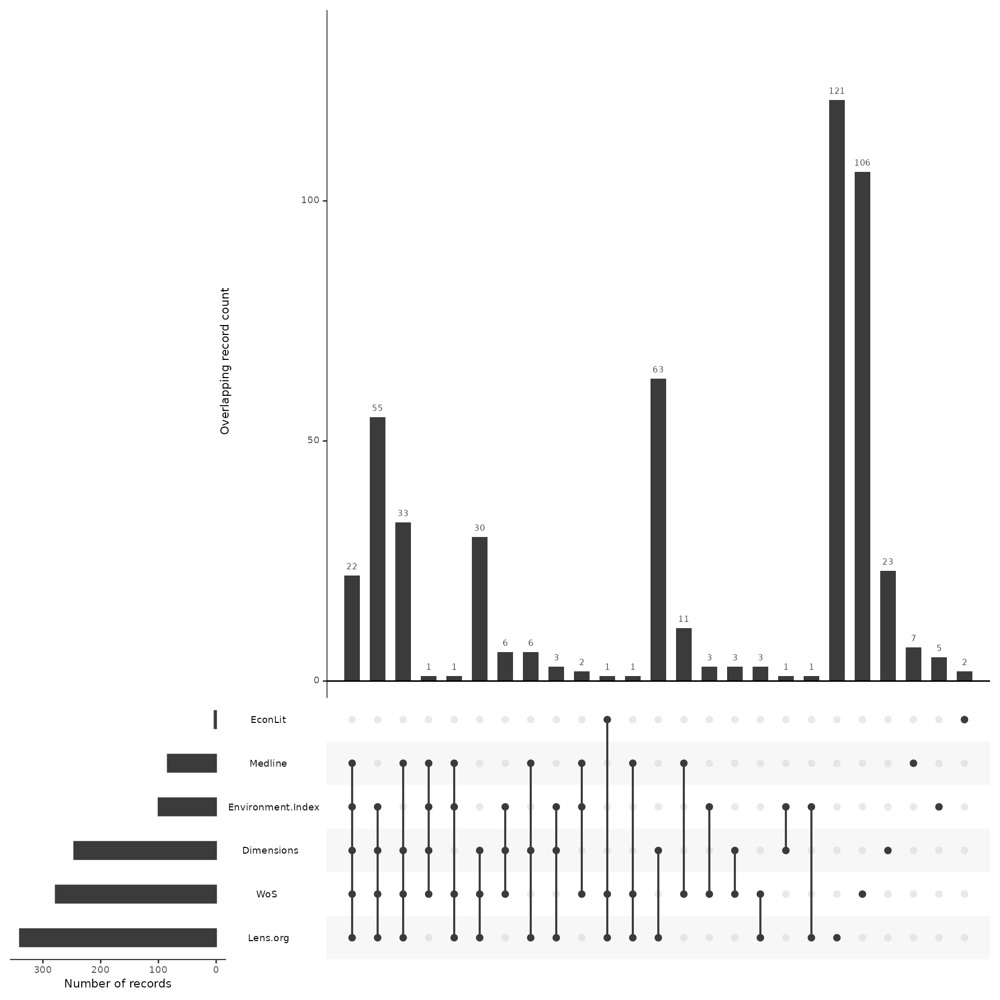
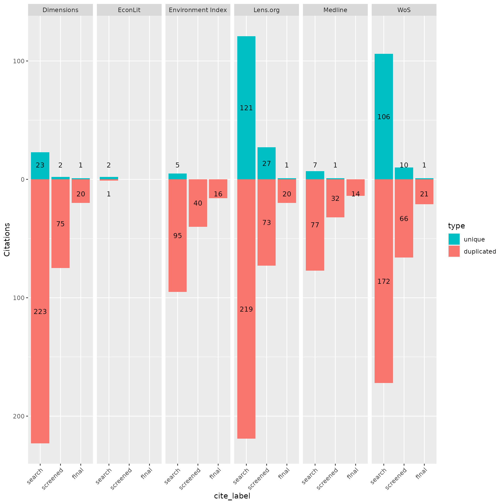

Analysis Across Screening Phases
2025-05-05
Source:vignettes/citesource_analysis_across_screening_phases.rmd
citesource_analysis_across_screening_phases.rmdAbout this vignette
This vignette was created in order to show how CiteSource can assist in assessing the impact of sources and methods in the context of an evidence synthesis project.
In order to complete a reliable systematic search one must include multiple resources to ensure the inclusion of all relevant studies. The exact number of sources that are necessary for a thorough search can vary depending on the topic, type of review, etc. Along with the selection and search of traditional literature sources, the application of other methods such as hand searching relevant journals, citation chasing/snowballing, searching websites, collecting literature from stakeholders, etc. can be used to minimize the risk of missing relevant studies.
When developing a search strategy teams often don’t understand the potential impact of a particular resources or search method. Questions can arise about how critical a particular database is or question the return on investment of weeks of gray literature searching on the web. While the answers to these questions will vary based on the topic and scope of a project, CiteSource can assist in better informing the Evidence Synthesis community when data from projects are shared
The goal of this vignette is to show you how CiteSource can help you gather information on the ways sources and methods impact a review. The data in this vignette is based on a mock project. It looks at the result of searches for systematic reviews and meta-analyses on the health, environmental and economic impacts of wildfires. We’ll walk through how CiteSource can import original search results, compare those information sources and methods, and determine how each source and method contributed to the final review.
If you have any questions, feedback, ideas, etc. about this vignette or others be sure to check out our discussion board on github!
1. Install and load CiteSource
Use the following code to install CiteSource. Currently, CiteSource lives on GitHub, so you may need to first install the remotes package.
#Install the remotes packages to enable installation from GitHub
#install.packages("remotes")
#library(remotes)
#Install CiteSource
#remotes::install_github("ESHackathon/CiteSource")
#Load the CiteSource
library(CiteSource)2. Import citation files
Start by importing multiple .ris or .bib files into CiteSource. When working from a local directory you will need to provide the path to folder that contains the files you wish to upload. You can print citation_files to your console to ensure all the files you expect are there and to see their order, which will be important in labeling the data.
CiteSource works with .ris and .bib files straight from any database/resource, however, the deduplication functionality relies on the metadata provided. Higher quality metadata will ensure more accurate results.
#Import citation files from a folder
file_path <- "../vignettes/new_stage_data/"
citation_files <- list.files(path = file_path, pattern = "\\.ris", full.names = TRUE)
#Print citation_files to double check the order in which R imported the files.
citation_files
#> [1] "../vignettes/new_stage_data//Dimensions_246.ris"
#> [2] "../vignettes/new_stage_data//econlit_3.ris"
#> [3] "../vignettes/new_stage_data//envindex_100.ris"
#> [4] "../vignettes/new_stage_data//final_24.ris"
#> [5] "../vignettes/new_stage_data//lens_343.ris"
#> [6] "../vignettes/new_stage_data//medline_84.ris"
#> [7] "../vignettes/new_stage_data//screened_128.ris"
#> [8] "../vignettes/new_stage_data//wos_278.ris"3. Assign custom metadata
NOTE: CiteSource allows you to label records in three custom fields: cite_source, cite_string, and cite_label. currently cite_source and cite_label are the primary fields that CiteSource employs, cite_string operates like cite_label, and there are plans to further integrate this field into future package functionality
cite_source metadata Using the cite_source field, you will tag files according to the source or method they were found. In this example we have two .ris files that represent the citations included after title/abstract screening and after full-text screening. We have labeled these files as “NA” in the cite_source field as they do not represent citations gathered as part of a source or method in the searching phase.
cite_label metadata Using the cite_label field, you will tag files according to the phase in which they are associated. In this case the six database files represent the search results and are in turn labeled “search”. The two citation files (screened and final) are files of included citations after title/abstract screening and after full-text screening and are labeled accordingly.
Once we tag these files accordingly we will save them as raw_citations.
# Create a tibble that contains metadata about the citation files
imported_tbl <- tibble::tribble(
~files, ~cite_sources, ~cite_labels,
"wos_278.ris", "WoS", "search",
"medline_84.ris", "Medline", "search",
"econlit_3.ris", "EconLit", "search",
"Dimensions_246.ris", "Dimensions", "search",
"lens_343.ris", "Lens.org", "search",
"envindex_100.ris", "Environment Index", "search",
"screened_128.ris", NA, "screened",
"final_24.ris", NA, "final"
) %>%
dplyr::mutate(files = paste0(file_path, files))
raw_citations <- read_citations(metadata = imported_tbl)
#> Importing files ■■■ 5%
#> Import completed - with the following details:
#> file cite_source cite_string cite_label citations
#> 1 wos_278.ris WoS <NA> search 278
#> 2 medline_84.ris Medline <NA> search 84
#> 3 econlit_3.ris EconLit <NA> search 3
#> 4 Dimensions_246.ris Dimensions <NA> search 246
#> 5 lens_343.ris Lens.org <NA> search 343
#> 6 envindex_100.ris Environment Index <NA> search 100
#> 7 screened_128.ris <NA> <NA> screened 128
#> 8 final_24.ris <NA> <NA> final 244. Deduplicate & create data tables
Having added the custom metadata to the files, we are now able to compare the records within and between the files. CiteSource uses the ASySD package to identify and merge metadata from duplicate records, maintaining the cite_source, cite_label,and cite_string fields of each record. Note that pre-prints and similar results will not be identified as duplicates, to learn more about the algorithm employed in identifying duplicate records see (ASySD).
#Identify overlapping records and consolidate unique citations
unique_citations <- dedup_citations(raw_citations)
#> Registered S3 method overwritten by 'synthesisr':
#> method from
#> as.data.frame.bibliography CiteSource
#> formatting data...
#> identifying potential duplicates...
#> identified duplicates!
#> flagging potential pairs for manual dedup...
#> Joining with `by = join_by(duplicate_id.x, duplicate_id.y)`
#> 1206 citations loaded...
#> 690 duplicate citations removed...
#> 516 unique citations remaining!
# Count number of unique and non-unique citations
n_unique <- count_unique(unique_citations)
# Create dataframe indicating occurrence of records across sources
source_comparison <- compare_sources(unique_citations, comp_type = "sources")5. Review internal duplication
Once we have imported, added custom metadata, and identified duplicates, it can be helpful to review the initial record count data to ensure everything looks okay. As a part of the deduplication process, duplicate records may have been identified within sources. The initial record table will provide you with a count of how many records were initially in each source file, and the count of distinct records that will vary if there were any duplicates identified within the source file.
In this case, you can see that the Lens.org had 340 records, while the initial .ris file contained 343 citations. This means that CiteSource identified duplicate references within that citation list. The 340 remaining citations are attributed to this source. Looking at the source Medline, we can see that CiteSource did not find any duplicate citations within this source as both counts read 84.
# initial upload/post internal deduplication table creation
initial_records <- calculate_initial_records(unique_citations, "search")
initial_record_table <- create_initial_record_table(initial_records)
initial_record_table| Record Counts | ||
| Records Imported1 | Distinct Records2 | |
|---|---|---|
| Dimensions | 246 | 246 |
| EconLit | 3 | 3 |
| Environment Index | 100 | 100 |
| Lens.org | 343 | 340 |
| Medline | 84 | 84 |
| WoS | 278 | 278 |
| Total | 1054 | 1051 |
| 1 Number of records imported from each source. | ||
| 2 Number of records after internal source deduplication. | ||
6. Analyze overlap across sources & methods
When teams are selecting databases for inclusion in a review it can be extremely difficult to determine the best resources and determine the return on investment in terms of the time it takes to apply searches. This is especially true in fields where research relies on cross-disciplinary resources. By tracking and reporting where/how each citation was found, the evidence synthesis community could in turn track the utility of various databases/platforms and identify the most relevant resources as it relates to their research topic. This idea can be extended to search string comparison as well as various search strategies and methodologies.
Heatmaps
Looking at the first heatmap we can see that the heatmap is organized by source in order of record count. The source count is located at the top of each of source’s column. The count within the cells represents the number of records that overlapped between those two sources. Looking at the records imported from LENS.org we can see of the 340 records, 212 were also found in Dimensions and 146 were found in Web of Science. We can also see that of the 100 records imported from Environmental Index, 82 were found in LENS.
The second heatmap displays the overlap between sources as a percentage. The gray cell shows the number of citations imported from the source and when reading up/down in each column we can see the percent of those citations that were found in intersecting source. Again, we know that Environmental Index had 100 records and that 82 of these citations were also in Lens.org, in this version we can see the overlap reads 82%. On the other hand if you look at the column for LENS, the same 82 citations only represent 24% of the 340 citations imported from LENS
my_heatmap_count <- plot_source_overlap_heatmap(source_comparison)
my_heatmap_count
my_heatmap_percent <- plot_source_overlap_heatmap(source_comparison, plot_type = "percentages")
my_heatmap_percent
Upset Plot
A more powerful way of looking at overlap of sources is through the use of an upset plot, which provides details on overlap across all sources. The upset plot also provides information on number of unique contributions of any given source.
In this example, we can see that the search in EconLit only had three results, but of those, two were unique and not found in any other source. We can also see that the single record from EconLit that was not unique was found in both LENS and Web of Science. Wwe can also see that Lens.org and Web of Science both contributed by far the most unique records and that Dimensions and LENS had the greatest overlap, with 63 records shared between them that were not found in any other source.
The upset plot is a powerful visualization tool and can be used in a number of ways, including for benchmark testing and testing variations of strings. Be sure to review the other vignettes for applying the upset plot to other use cases.
plot_overlap_across_sources <- plot_source_overlap_upset(source_comparison, decreasing = c(TRUE, TRUE))
#> Plotting a large number of groups. Consider reducing nset or sub-setting the data.
plot_overlap_across_sources
7. Analyze records across Phases
Until now we have only reviewed overlap across sources. In the following, we will now include the cite_label data as well in order to track each source’s records across screening phases.
In this case we uploaded an .ris file for all citations that were included after title and abstract screening as well as after full-text screening. Using the contributions plot we can easily see the number of records from each source, both overlapping and unique, across these phases.
Assess contribution across phases
Looking at the plot there are three bar plots for each source in the order search, screened, final. The green bar within each phase is the count of unique records from that source, while the red bar shows the number of records from that source that overlapped at least one other source. In this case we can see that despite the high number of unique records from LENS and Web of Science, each only contributed a single unique citation in the end.
plot_contributions_over_phases <- plot_contributions(n_unique,
center = TRUE,
bar_order = c("search", "screened", "final")
)
plot_contributions_over_phases
8. Analyze data with tables
Visualizations are great, but so are tables! CiteSource provides the ability to create tables for additional analysis. Presenting data in the form of a search summary table can provide an overview of each source’s impact (see Bethel et al. 2021 for more about search summary tables).
Detailed record table
The detailed record provides more details regarding unique records. Let’s break down the columns.
Starting with the first two columns, we can see that this is the same data that was provided in the initial record table. Since the number of records imported and the actual number of distinct records from that source may differ, this information is provided again due to the fact that the distinct record count is what calculations are based on. The one difference here is that the total distinct records in this table is the number after deduplication, this is done in order to give an accurate number of records that were screened.
The next two columns, Unique Records and Non-unique Records, simply shows the number of those distinct records that were either unique or non-unique.
The source contribution column gives the percent of distinct records that source contributed to the total number of distinct records. For example, we know there were 1051 distinct records before deduplication, since LENS had 340 distinct records (down from 343 after internal deduplication), the percent of records contributed before deduplication was 32.4%. Having 121 of the 264 total unique citations, the percent of unique sources contributed is 45.8%
The final column shows the percent of records that were unique within each source. In the case of Environmental Index we can easily see that the source unique percent of 5% is the lowest of any source.
detailed_count<-calculate_detailed_records(unique_citations, n_unique, "search")
create_detailed_record_table(detailed_count)| Record Summary | |||||||
| Records Imported1 | Distinct Records2 | Unique Records3 | Non-unique Records4 | Source Contribution %5 | Source Unique Contribution %6 | Source Unique %7 | |
|---|---|---|---|---|---|---|---|
| Dimensions | 246 | 246 | 23 | 223 | 23.4% | 8.7% | 9.3% |
| EconLit | 3 | 3 | 2 | 1 | 0.3% | 0.8% | 66.7% |
| Environment Index | 100 | 100 | 5 | 95 | 9.5% | 1.9% | 5.0% |
| Lens.org | 343 | 340 | 121 | 219 | 32.4% | 45.8% | 35.6% |
| Medline | 84 | 84 | 7 | 77 | 8.0% | 2.7% | 8.3% |
| WoS | 278 | 278 | 106 | 172 | 26.5% | 40.2% | 38.1% |
| Total | 1054 | 8 516 | 264 | 787 | NA | NA | NA |
| 1 Number of raw records imported from each database. | |||||||
| 2 Number of records after internal source deduplication. | |||||||
| 3 Number of records not found in another source. | |||||||
| 4 Number of records found in at least one other source. | |||||||
| 5 Percent distinct records contributed to the total number of distinct records. | |||||||
| 6 Percent of unique records contributed to the total unique records. | |||||||
| 7 Percentage of records that were unique from each source. | |||||||
| 8 Total citations discovered (after internal and cross-source deduplication). | |||||||
Precision/Sensitivity Table
Like the contributions plot, the precision/sensitivity table takes into consideration data from screening phases. Alongside the distinct records, and records included a the title/abstract and screening phases for each source, the table also calculates the precision and sensitivity (also known as recall). This table does not differentiate overlapping vs. unique records.
In our example, we can see that of the 340 records from LENS, 100 were included after title/abstract screening, and 16 were included after full-text screening.
Precision Calculation in the Function:
The function calculates precision as:
- Final Records from Source (
final): The number of records from a specific source that were included in the final synthesis. - Distinct Records from Source (
Distinct Records): The total number of unique records (after deduplication) from that source.
Sensitivity Calculation in the Function:
The function calculates recall as:
- Final Records from Source (
final): The number of records from a specific source that were included in the final synthesis. - Total Final Records Across All
Sources(
Total final records): The total number of records that made it into the final synthesis from all sources combined.
phase_count<-calculate_phase_records(unique_citations, citations, "cite_source")
create_precision_sensitivity_table(phase_count)| Record Counts & Precision/Sensitivity | |||||
| Distinct Records1 | Screened Included2 | Final Included3 | Precision4 | Sensitivity/Recall5 | |
|---|---|---|---|---|---|
| Dimensions | 246 | 77 | 21 | 8.54 | 87.50 |
| EconLit | 3 | 0 | 0 | 0.00 | 0.00 |
| Environment Index | 100 | 40 | 16 | 16.00 | 66.67 |
| Lens.org | 340 | 100 | 21 | 6.18 | 87.50 |
| Medline | 84 | 33 | 14 | 16.67 | 58.33 |
| WoS | 278 | 76 | 22 | 7.91 | 91.67 |
| Total | 6 516 | 7 128 | 8 24 | 9 4.65 | NA |
| 1 Number of records after internal source deduplication. | |||||
| 2 Number of citations included after title/abstract screening. | |||||
| 3 Number of citations included after full text screening. | |||||
| 4 Number of final included citations / Number of distinct records. | |||||
| 5 Number of final included citations / Total number of final included citations. | |||||
| 6 Total citations discovered (after internal and cross-source deduplication). | |||||
| 7 Total citations included after Ti/Ab Screening. | |||||
| 8 Total citations included after full text screening. | |||||
| 9 Overall Precision = Number of final included citations / Total distinct records. | |||||
9. Record level table
Another useful table that can be exported as a .csv is the record-level table. This table allows users to quickly identify which individual citations in the screened and/or final records were present/absent from each source. The source tag is the default (include = “sources”), but can be replaced or expanded with ‘labels’ and/or ‘strings’
citation_table_final<-unique_citations %>%
dplyr::filter(stringr::str_detect(cite_label, "final")) %>%
record_level_table(return = "DT")
citation_table_final10. Exporting for further analysis
We may want to export our deduplicated set of results (or any of our
dataframes) for further analysis or to save them in a convenient format
for subsequent use. CiteSource offers a set of export functions called
export_csv, export_ris and
export_bib that will save dataframes as a .csv file, .ris
file or .bib file, respectively.
You can then reimport exported files to pick up a project or analysis without having to start from scratch, or after making manual adjustments (such as adding missing abstract data) to a file.
Generate a .csv file
The separate argument can be used to create separate columns for cite_source, cite_label or cite_string to facilitate analysis.
#export_csv(unique_citations, filename = "citesource_export_phases.csv")Generate a .ris file
Generate and .ris and indicate custom field location for cite_source, cite_label or cite_string. In this example, we’ll be using EndNote, so we put cite_sources in the DB field, which will appear as the “Name of Database” field in EndNote and cite_labels into C5, which will appear as the “Custom 5” metadata field in EndNote.
#export_ris(unique_citations, filename = "citesource_export.ris", source_field = "DB", label_field = "C5")Generate a bibtex file
Generate a bibtex file and include data from cite_source, cite_label or cite_string.**
#export_bib(unique_citations, filename = "citesource_export.bib", include = c("sources", "labels", "strings"))Re-import a CiteSource exported file
In order to reimport a .csv or a .ris you can use the following. Here is an example of how you would re-import the file if it were on your desktop
#citesource_working_example <-reimport_csv("citesource_export.csv")
#citesource_working_example <-reimport_ris("citesource_export.ris")